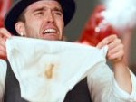

Justin Timberlake
 De: La Frikipedia, la enciclopedia extremadamente seria.
De: La Frikipedia, la enciclopedia extremadamente seria.
| De la serie cantantes del mundo:
|
| Justin Timberlake
|
|
|
| Nombre completo
|
Justino Timberlago
|
| Estilo musical
|
Pop
|
| Millones de fans
|
Millones, muchas, muchas, pocas, 0
|
| ¿Toca algún instrumento?
|
Bitboxs, flauta fálica y maracas
|
| ¿Desafina?
|
Sólo cuando canta
|
| Popularidad
|
A veces
|
| Se dió a conocer con
|
Su éxito Baby
|
| Nacionalidad
|
Disneylandia
|
| Raza
|
French Poodle
|
| Productora
|
Disney
|
| Notas
|
Es primo de Bob Esponja
|
este Justin no es...pero casi
El famoso cantante, compositor, productor y geisho.
Su pasión es la música, imitar a Victoria Beckham en sus horas libres, y algún dia, sueña ser como él, pero no se sabe en que términos.
Nació en Disneylandia y se hizo famoso por ser parte del grupo más gay, 'N Sync. Se separó del grupo, porque se comenta que un cantante lo quizo hacer hombre, pero él no se dejó. Desde entonces se hizo solista.
Discos
Filmó muchos discos, y la mayoría de sus canciones eran a duetos, ya que tenía miedo de poder fallar y volver atrás, hizo canciones con Timbaland, 50 Cent (El mejor filme de su vida) y Madonna, bueno, hay más, pero estos son los principales blancos que cayerón en su enviciado juego.
Su voz es algo así como afeminado, se dice que nunca terminó de desarrollar, ya que le gustó su relación con Michael Jackson.
Sus discos como solista fueron:
- Justified (Justificame): El éxito no le duró mucho, el disco consta con 15 canciones, y todas hechas un despije, si lo comprastes, ya me imagino lo que sufristes cuando desperdiciastes todo ese dinero, en verdad, el disco no tiene "Justificación" que digamos.
El disco fué dedicado para:
- Aquellos que siempre confiaron en él.
- Los que no confiaron en él, pero lo intentaron
- Los que compraron el disco
- Los que intentaron comprar el disco
- A todos los afeminados, gays, travestis, etc. (Si, también pensa en ellos)
- A aquellos que intentaron pensar en él, que tenían la mente ocupadas en otras cosas.
- Y a todos aquellos que visitaron su página web (No pasó de 15 visitas)
- FutureSex/LoveSounds (Futuro sexo/Canciones para hacer el amor): Regresó con Sexy Back (El gay regresó), con muchas lesbianas (para que aquellos que pensaran que era Timbaland, su éxito del año, como invertió todo lo que le quedaba en el vídeo, no lo quedó de otra que esperar hasta la mitad de un año, para sacar su siguiente vídeo, que también hizo a dueto, la canción era My Love (Mi negro), sacó una coreografía comprada con 10 bailarines sacados del basurero, después, como se excitó tanto, sacó otro video llamado What Goes Around...Comes Around (Para que me sacan...Si me rodean), mitad película y mitad canción, esta vez no lo hizo a dueto (¡¡Por fin!!), es la canción más larga de todo su disco, dura 10 minutos, y en todo el vídeo, hizo una chorrada, creo que lo único bueno que pasó ahí, fué la "protagonista" de su película.
El disco fué dedicado a todo aquellos que lo comprarán, como se le subió la fama, ya no le importaba nada como en el primero.
Éxitos
 Timberlake orgulloso de ser tan bueno haciendo mierda....musiclamente
Ahora vamos a sacar la lista de sus canciones "más famosas", y a poner su pequeña descripción general (según él), desde el primer disco, hasta el último (Ja, ja).
- Rock Your Body (Tu cuerpo rockea): Trata sobre los cuerpos de los negros que conoció a medida de que iba avanzando su carrera, pura chorrada, droga, sexo, alcohol, dinero.
- Cry Me a River (Llórame con un Río): Canción compuesta en sus momentos de soledad, cuando se hacía pajas y veía porno gay en la casa de su abuelita.
- Sexy Back (El gay regresó): "Lesbianas", travestis, mucha acción al extremo, ¿Pero, y él?, creo que el video se vería mucho mejor sin él haciendo el relleno.
- My Love (Mi negro): Se inspiró en su primer éxito, nada más que esta vez la hizo a dueto, con su segundo admirador secreto, (No, no es Timbaland), y se coreografeó la canción con 10 bailarines sacados del basurero, y la coreografía no la hizo él, obtuvo ayuda.
- What Goes Around...Comes Around (Para que me sacan...Si me rodean): Dinero, fama, todo lo que le hicieron a él, es una venganza hecha en el vídeo, mitad video y mitad película.
Canciones a Duetos
Cuándo sacó su famosa canción "Sexy Back" (fóllame por atrás), todos los cantantes machos querían subirse a la cama con él, como Timbaland (Típico de él), Nelly Furtado, The Rock, Bill Gates y demás. Hizo otros duetos con 50 Cent, Britney Spears, y Madonna.
Listado de canciones a dueto
- Ayo Technology (Tecnología ¡YA!) (Con 50 Cent): Dedicada a todas las rameras que se cruzaron en su camino.
- 4 Minutes (4 Minutos) (Con Madonna): Imponiendo un nuevo record de 4 minutos, haber quién
follaba más rápido se piteaba los mejores pasos en tan solo 4 minutos, ¡SI!, ¡CUATRO MINUTOS!.
- Give It To Me (Damelo Todo a Mí) (Con Timbaland y Nelly Furtado): Expresión de su gusto por los penes grandes.
Las más famosas hasta la fecha, pero no duden en dudarlo de que habrán más en un futuro mejor.
Autor(es):
- Krusher
- El Sevillano
- Pipop
- Santa wii
- ArreKarallo
- Prototype
- Veni Vidi Vici
- Sp18
- E1324
- FrikiFer
Frikipedia 2005-2016, Licencia
GFDL 1.2 - Extraído por FrikiLeaks